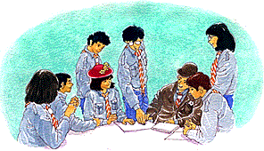
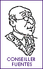
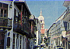
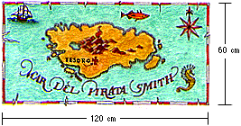
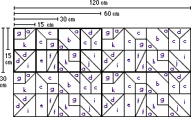

Type d'Activité: Jeu
Durée: 3 heures
Lieu: Au local ou en Camp
Participants: L'Unité

1 Moreno (20 km) Ciudad Capital
(85 km)
2 Parc Delfos (zone aménagée)
3 Grange de Dunton (Señor Campos)
4 Dir. Moreno et la Capitale
5 Aire de service
6 Dir. Esmeralda et la Côte
7 Señora Durán
8 Café "Joe" (Señor Gomez)
9 Nouveau chemin vers l'aire de service
10 Señor y Señora Barra |
11 Terrain Municipal
12 Garage "Largo
Camino" (Señor Herrera)
13 Demeure du Señor Solís
14 Señora Vera
15 Señor Soto
16 Docteur María Torres
17 Señor Llanza
18 Ecole (Señora Montes)
19 Parking
20 Bar "El Atajo" (Señor Alvarez)
21 Conseiller Fuentes
22 Magasin (Señor Tomás) |
23 Carrefour
24 Entrepôt désaffecté
25 Eglise
26 Padre Suárez
27 Commissariat de Police
28 Usine de Sacs en Papier (Fernando Concha)
29 Voies désaffectées
30 Gare
31 B2173
32 Vers Esmeralda (35 km)
et vers la Côte
33 Valle Verde |
Comment résoudre certaines situations quand la prise
de décision dépend de nombreuses personnes? Sans aucun doute,
c'est d'autant plus délicat que chacun défend ses intérêts
particuliers. De nos jours, il n'est pas rare de rencontrer des situations
où le progrès proposé par l'un signifie une regression
pour l'autre, un préjudice pour la qualité de sa vie.
Par cette activité, nous souhaitons confronter ton
Unité à ce type de problème d'une manière amusante.
Ce Jeu a pour objectif de placer les participants dans une situation fictive
dans laquelle il joueront un rôle actif, discuteront d'une problématique
qui affecte la vie de la communauté toute entière et devront
prendre des décisions pour les résoudre.
En premier lieu, imaginez ! Les autorités locales
ont décidé de construire une autoroute qui doit traverser
un joli petit village. Comment croyez-vous que vont réagir ses habitants ?
Vous aurez sûrement une toute autre appréciation en vous mettant
à la place des centaines de personnes qui ont besoin de cette autoroute.
Avant l'activité
Pour préparer ce jeu, les responsables doivent suivre
les étapes suivantes :
| 1. |
Suivant le nombre de participants, confectionner les cartes " rôle "
et " obstacle " que présente l'Annexe
1. Ces cartes portent au recto le dessin du personnage et au verso,
les informations nécessaires pour le caractériser.Le nombre
de joueurs peut varier entre 23 et 48 personnes. Avant de commencer l'activité,
nous suggérons de faire la distribution suivante : 70% des personnes
reçoit une carte " Rôle ", 15% une carte
" obstacle ", et les 15% restant ne reçoivent
aucune carte et constitue " le groupe d'opinion neutre ". |
| 2. |
Les responsables doivent réaliser une copie de la grande carte de
Valle Verde et du projet d'autoroute que produit la Figure
1. Cette carte doit rester à la vue de tous les participants
durant le déroulement du Jeu. |
| 3. |
De même, ils préparent une copie pour chaque participant de
l'article de "LA ESTRELLA " (Annexe
2). |
| 4. |
Une semaine avant l'activité, les responsables sollicitent des informations
complémentaires auprès des joueurs. Il s'agit de vérifier:
Le coût d'un kilomètre d'autoroute
Les effets de la pollution sonore sur les plantes, les
animaux et les gens
Les mécanismes d'opposition
face à un projet d'ouvrage public. En existent-il ? |
| 5. |
Enfin, la maîtrise invite les jeunes à venir déguisés
le jour-J et munis d'éléments caractéristiques pour
animer le Jeu. |
Lancement
L'Unité se réunit au complet. Le Meneur de Jeu
incite les participants à se mettre dans la peau de leur personnage
et à se plonger dans l'ambiance afin que l'activité soit la
plus vivante possible.
Puis, il introduit la problématique en signalant, que
bien souvent les effets du progrès économique ou industriel
sont néfastes pour l'environnement et pour la paix. Par exemple,
l'automobile nous transporte d'un lieu à un autre rapidement et confortablement,
mais pollue l'air de ses gaz toxiques.
Généralement on satisfait le plus grand nombre
de personnes au détriment de quelques-uns. C'est ce qui se produit
pour la construction d'un barrage : si nombreux sont les bénéficiares
de l'énergie électrique qu'il permet de produire, nombreux
sont aussi les êtres vivants, végétaux et animaux qui
disparaissent sous les eaux.
Déroulement du Jeu
Durée conseillée : 10 minutes
| 1. |
Le Meneur de Jeu propose à tous les participants de s'imaginer qu'ils
sont à Valle Verde, un joli petit village où doit passer la
nouvelle autoroute M19. De nombreux habitants s'opposent au projet, mais
certains y voient l'occasion rêvée pour améliorer leur
situation actuelle. Tous doivent décider ensemble de l'avenir de
Valle Verde. |
| 2. |
Pour lancer le Jeu, les responsables exposent la carte et distribuent aux
joueurs l'article de "LA ESTRELLA". On y décrit l'alternative
dans laquelle se trouve le village. Les opinions divergent à ce sujet,
et une réunion publique est fixée pour entendre les différents
points de vue et analyser toutes les conséquences. |
Durée conseillée : 30 minutes
| 3. |
Les responsables distribuent les cartes "Rôle", de sorte
que la majorité reçoive un rôle. Les cartes "Obstacle"
sont réparties entre les participants qui n'ont pas de personnage.
Si nécessaire, les responsables peuvent inventer et ajouter d'autres
cartes.
Les jeunes qui n'ont pas reçu de carte, constituent "le groupe
d'opinion neutre". Au cours de la réunion publique, les factions
en conflit tenteront de gagner son soutien. On attend de ces joueurs qu'ils
apportent de nouvelles données appuyées par les recherches
préalables réalisées durant la semaine. |
| 4. |
Le Meneur de Jeu annonce à tous les participants qu'ils disposent
d'un peu de temps pour se préparer avant la réunion publique.
C'est le moment d'étudier son rôle, de chercher les arguments
à présenter dans la discussion qui va suivre. Les responsables
invitent les participants à observer sur la carte quels sont les
secteurs résidentiels, industriels et commerciaux de Valle Verde.
La localisation est décisive et présente autant de raisons
valables de se porter pour ou contre le projet d'autoroute.
C'est aussi le moment de trouver la meilleure façon de donner
du caractère à son personnage, en profitant au mieux de tous
les accessoires apportés à cet effet. |
Durée conseillée : 10 minutes
| 5. |
La maîtrise peut stimuler les participants qui défendent
la même position à imaginer de possibles réactions collectives.
Elle offre un moment aux différentes factions favorables et défavorables
au projet d'autoroute, également aux " neutres ",
pour organiser leur argumentation.
On annonce alors l'heure exacte et le lieu où se tiendra la réunion
publique des habitants de Valle Verde. |
Durée conseillée : de 45 minutes à
1 heure
| 6. |
La réunion publique sera présidée par le Conseiller
Fuentes, qui souhaite faire entendre les désirs des habitants de
Valle Verde par dessus tout. Pour cela, il a besoin de connaître la
position à adopter à l'avenir devant le Conseil de Province
(l'autorité régionale) et le Ministère (l'autorité
nationale).
Le Meneur de Jeu peut assumer le rôle du Conseiller Fuentes si
la situation l'exige ; l'important et de permettre à chaque
joueur d'exprimer ses idées. |
| 7. |
Le Conseiller Fuentes ouvre la réunion publique. L'un après
l'autre, les habitants de Valle Verde exposent leurs arguments. Il est probable
que le débat s'échauffe au fur et à mesure, le Meneur
de Jeu veillera à tempérer la discussion. Quand tous se sont
prononcés, le Conseiller Fuentes propose un vote qui décidera
de l'avenir du projet de l'autoroute. Seuls les personnes résidant
à Valle Verde ont le droit de vote ! Le résultat étant
connu, le Meneur de Jeu déclarera la réunion publique terminée. |
8. Pour conclure le Jeu, la maîtrise propose à
chaque Patrouille de rédiger un article sur la réunion, pour
" LA ESTRELLA " . Elle peut également
enregistrer un reportage pour la radio locale de Valle Verde.
9. Les articles sont lus au cours de la réunion suivante.
Après quelques explications, les responsables invitent les participants
à commenter l'activité. Il est important de permettre à
chacun d'exprimer ce qu'il ressentait en jouant son personnage.
Nous espérons que ce Jeu vous aura servi à sentir
comment affronter des problèmes tels que celui soulevé par
" l'Autoroute de Valle Verde ". Retenez au moins qu'une
solution sera toujours plus juste si chacun fait l'effort de se mettre à
la place des autres.
Ce document est une adaptation de " l'Autoroute
de Spring Green " de Stephen Joseph et Niels Lester, et publié
par la Division d'Education Scientifique, Technique et Vocationnelle de
l'UNESCO.
Annexe 1
CARTES ROLE ET OBSTACLE
Vous trouverez ci-dessous des exemples de cartes déterminant
les rôles dans ce Jeu de simulation. Celles-ci ne sont pas exhaustives,
il est bien sûr possible de créer d'autres personnages ayant
des intérets plus particuliers, en faveur ou contre le projet d'autoroute.
Même s'il s'applique en grande partie à un certain type de
communauté (Europe occidentale), le contenu peut s'adapter à
tout autre réalité. Si l'Unité souhaite appliquer le
jeu au contexte local, les responsables pourront inclure des personnages
pittoresques du village, de la région ou du pays où ils vivent.
1. Cartes "Obstacle"
CARTE OBSTACLE
"L'autoroute fera sûrement un bruit terrible, surtout sur le
terre-plein de la Grange du Señor Campos."
|
|
CARTE OBSTACLE
"Pourquoi ne développent-ils pas plutôt le chemin de
fer ? Que je sâche, il n'y a pas de train entre Ciudad Capital
et Esmeralda ?" |
|
CARTE OBSTACLE
"Il paraît que les vaches donnent moins de lait quand il y a
du bruit. Cela touchera-t-il les vaches du Señor Campos ?"
|
|
CARTE OBSTACLE
"Dire que ça diminuera le trafic de l'A74, c'est faux, à
tous les coups. Il n'y en aura, pas toujours autant de la région
pour sortir de l'autoroute par Valle Verde ?" |
|
2. Cartes "Rôle"
 |
Vous êtes le médecin de Valle Verde. Déjà
5 ans que vous êtes installée ici, et certaines personnes ne
se confient toujours pas à vous car vous êtes la première
femme médecin de Valle Verde. Vous paraissez specialement préoccupée
par les questions sanitaires que soulèvent la nouvelle autoroute,
les troubles psychologiques surtout que peut causer sur les jeunes enfants
le plomb contenu dans le pétrole ; vous pensez que l'augmentation
du trafic avec l'autoroute va amplifier ce problème. |
|
 |
Votre maison est située juste sur le tracé de
l'autoroute. Vous avez toujours vécu ici. Avant de perdre votre mari,
vous aviez acheté ensemble une grange avicole au père du Señor
Solís, de son vivant. Bien décidée à conserver
votre maison, vous ferez tout pour arrêter l'autoroute, bien que le
Ministère vous aie fait une belle offre d'expropriation pour votre
terrain et votre maison. |
|
 |
Vous êtes Haut Fonctionnaire dans le Secteur de l'Environnement.
Le Ministre vous a demandé de faire un rapport sur les conclusions
de la réunion. Vous vous êtes rendue à Valle Verde en
train, et de toute façon, n'avez jamais conduit d'automobile. Vous
avez un chauffeur mais préférez voyager en train. En tant
que fonctionnaire de l'Etat, vous devez être impartiale, mais appuyez
personnellement la protection de l'environnement. |
|
 |
Vous êtes gérante des restaurants " chez
Lorca " et avez été informée que vous obtiendrez
un contrat pour l'aire de service de Valle Verde sur la M19. Votre mission
est simple : convaincre le voisinage qu'il y aura de nombreuses possibilités
d'emploi. Déjà vous recherchez une personne capable d'administrer
le restaurant et le snack-bar. |
|
 |
Vous êtes la coordinatrice du groupe de pression pour
l'environnement " Amis du Monde ". Vous êtes
franchement opposée à l'autoroute, comme déjà
vous avez pu l'exprimer à "LA ESTRELLA". Vous espérez
convaincre les gens de Valle Verde à faire campagne contre. Jeune
et idéaliste, vous prétendez que la M19 représente
un fléau environnemental contre lequel il faut lutter à tout
prix. Vous avez déjà affronté des propositions au niveau
local, mais celui-ci est le premier projet d'envergure nationale. |
|
 |
Vous êtes furieux. Non seulement l'autoroute va passer
à quelques mètres de la cour de votre ferme, mais elles séparera
surtout vos terres en deux. Le Ministère vous assure de pouvoir utiliser
la B2173, qui passe au-dessus de l'autoroute, pour aller d'un côté
de la propriété à l'autre ; d'autre part, la M19
va causer de sérieux problèmes pour mener et rentrer le troupeau
des paturâges à la stabulation. Pour parfaire votre colère,
il semble que le Señor Solís, à qui vous louez les
terres, reste totalement indifférent. |
|
 |
Vous êtes Directeur de la " Construcciones
Ugarte Limitada ", constructeur expert en autoroutes et membre
de la Fédération Nationale des Autoroutes. Vous espérez
obtenir le projet de la M19. En homme d'affaire, âpre au gain, vous
êtes dur lorsqu'il s'agit de négocier. |
|
 |
Vous êtes propriétaire du garage " Largo
Camino " et préoccupé par les pertes économiques
que vous allez endurer si l'on construit la nouvelle Station Service de
la M19. A la rigueur, vous cesseriez de vous opposer au développement
du projet si vous parveniez à monter une bonne affaire de Dépannage-Autoroute.
Ceci signifierait que les ventes de carburant perdues seraient ratrappées
par un service de dépannage et réparations prospère. |
|
|  |
Vous êtes le représentant de Valle Verde au Conseil
Provincial. C'est vous qui avez convoqué la réunion publique
afin de connaître les souhaits des gens du village. Bien conscient
qu'il existe de forts ressentiments à l'égard du projet, vous
devez être ferme, mais équitable. |
|
 |
Vous êtes Directeur du service de transport " Contenedores
Real Limitada ", qui importe et exporte depuis Esmeralda. Vous
êtes en train de renouveler votre flotte de camions poids-lourd et
la nouvelle autoroute sera pour vous un véritable tremplin pour votre
commerce. |
|
Annexe 2
ANNEE Nº3, NUMERO 4, NOVEMBRE, LOS ALERCES Nº443,
VALLE VERDE ···· ANNEXE 2
Des projets d'Autoroute secouent Valle Verde
Valle Verde, pittoresque et enchanteur village sur la route
principale entre Esmeralda et Ciudad Capital, reçoit avec des avis
mitigés la publication des plans de construction de la nouvelle autoroute
M19. Certains habitants ont déclaré la guerre à ce
projet, tandis que d'autres soutiennent que l'autoroute permettra de transformer
le village en un lieu sûr et tranquille.
Je me suis rendu cette semaine dans le village pour sonder
les opinions de ces villageois, et, |
De notre reporter Juan Rodríguez
j'ai appris avec soulagement que le Conseiller Fuentes,
représentant de Valle Verde au Conseil Provincial, avait déjà
pensé agir ainsi et convoquer les habitants pour une réunion
publique qui se tiendra prochainement à la Mairie. Le Conseiller
Fuentes m'a informé qu'il désirait entendre toutes les parties
intéressées. Il s'est adressé au Ministère des
Transports et à celui de l'Environnement, pour leur demander d'envoyer
leurs représentants, et pense sincèrement recevoir d'eux une
réponse favorable. |
BRUIT
La première chose qui m'a frappée
dans le village fut le bruit terrible que produisent surtout les poids lourds
qui traversent le centre du bourg. Le Padre Suarez, curé de Valle
Verde, explique que le bruit et les vibrations sont la cause de considérables
dommages structurels à son église, située juste au
bord de la route principale. Pourtant, la Señora Durán, résidant
également au bord de la A74, affirme : "j'ai vécu
toute ma vie ici et le bruit ne m'a jamais dérangé".
JE NE VEUX PAS BOUGER
La Señora Durán ajoute : "On
m'a dit que ma maison serait démolie s'ils constuisent la nouvelle
autoroute, mais ce sera sur mon cadavre; je resterai là même
si l'on m'arrache de force".
DANGEREUX A TRAVERSER
Des paroles dures, en effet, mais il semble qu'il
existe au village tout un courant en faveur de l'autoroute. La Señora
Pérez, qui habite le Terrain Municipal, |
reconnaît qu'elle redoute que ses enfants aient à
traverser l'actuelle route A74, deux fois par jour, pour aller et revenir
de l'école. " Sur cette route, cinq enfants ont été
renversés l'année dernière et tout le monde se souvient
de la mort du jeune José López, il y a quelques années ".
La Señora Montes, directrice de l'école primaire du village,
partage cette crainte, et elle reconnaît que l'autoroute permettrait
de se rendre à Ciudad Capital pour beaucoup moins cher.
VOYAGES
Certaines
personnes de Valle Verde se rendent tous les jours à la petite ville
de Moreno, et l'un deux, le Señor Pedro Rosas, exprime vigoureusement
l'opinion des voyageurs pressés : "la route est en mauvais
état, les trains sont chers".
OPINION
La division
de l'opinion publique sur le problème de l'autoroute se reflète
dans les diverses organisations locales qui pour l'heure préparent
leurs armes pour le combat. |
Le groupe écologiste "Amis du Monde"
promet de combattre l'autoroute jusqu'à la mort, appuyé pour
cela par la Société de Valle Verde, qui désire préserver
cette charmante zone rurale de ce qu'ils nomment les " ravages "
de l'autoroute. Mais les utilisateurs de la route et les industriels organisent
le soutien du projet. Le Groupe de Développement du Réseau
de la Province affirme que l'autoroute est essentielle pour soulager Valle
Verde du trafic routier et développer les échanges avec la
ville de Esmeralda. En cela, ils sont appuyés par les constructeurs
d'autoroute, qui prévoient d'envoyer leurs représentants à
la réunion convoquée par le Conseiller Fuentes.
Tous ces groupes d'intérêts, avec leur batterie
de données et de chiffres, vont sûrement faire monter la température
des personnalités locales, déjà échauffées
par le sujet, et personne parmi tous les gens interrogés cette semaine
ne souhaiteraient être à la place du Conseiller Fuentes, qui
devra maintenir l'ordre au cours de la réunion publique. |
LA ESTRELLA a demandé
aux représentants de deux groupes de pression opposés d'exprimer
leurs points de vue.
Paulo Prado, coordinateur des "Amis du Monde":
"La M19 est le symbole de ce qui ne fonctionne
pas en matière de politique nationale des transports. Elle coûtera
des millions de dollars, condamnera des milliers de kilomètres carrés
de bonne terre agricole et se superposera au réseau ferrovière
qui fonctionne très bien et qui, selon nous, pourrait être
mieux exploité. Avec le pétrole qui pollue, nous devrions
nous libérer des voitures et ménager aussi un peu nos aliments.
Cette autoroute nous conduit dans une fausse direction, c'est autant d'argent
qui ne sera pas investi dans les transports publics, dont dépend
la moitié des personnes qui n'ont pas d'automobile. Les défenseurs
de l'autoroute croient qu'elles soulagera Valle Verde, mais l'expérience
montre que le trafic se répand jusqu'à remplir tout l'espace
disponible. Nous défendrons des solutions concrètes aux problèmes
de trafic, en planifiant de sorte que les gens n'aient pas à voyager
autant".
Andrés Arias, Président du Groupe de Développement
du Réseau de la Province: |
"Jusqu'ici, tout le transit depuis
Ciudad Capital et Esmeralda, y compris les poids lourds, traverse Valle
Verde et menace la vie de ses habitants, endommageant les monuments historiques
à force de vibrations et cause bien des désagréments
en terme de bruit et de pollution. La M19 permet de supprimer ses problèmes
et dans le même temps, d'appuyer l'économie en générale,
en réduisant les temps de transport par camion, et permet en particulier
de développer le commerce international avec Esmeralda, que l'engorgement
de la A74 avait empêché d'étendre pleinement.
Si la M19 n'est pas construite, cette opportunité
sera perdue, la vie à Valle Verde risque d'empirer et le village
sera etranglé par sa propre route principale". |

Type d'Activité: Jeu
Durée: 1 heure et 30 minutes
Lieu: Au local ou en Camp
Participants: L'Unité
Il existe de nombreux problèmes qui ne peuvent être résolus
qu'avec l'aide des autres. Certes, travailler avec les autres n'est pas
toujours facile car nous avons chacun notre personnalité et réagissons
de manière différente selon la situation. Au cours du 19º
Jamboree Mondial Scout, des milliers de jeunes du monde entier seront réunis
pour se divertir mais également pour résoudre des problèmes
ensemble. Devant un tel défi, il est très important de se
donner des moyens pour communiquer au delà des différences
culturelles et de l'histoire de chacun.
L'activité imaginaire que nous te présentons
maintenant se déroule dans les eaux chaudes des Caraïbes, où
ton Unité se transforme en un EQUIPAGE DE PIRATES à
la recherche de l'un des trésors les plus étonnants.
Par ce Jeu, nous espérons, d'une manière amusante,
aider la Patrouille à sentir l'importance de l'entraide.
Avant l'activité
La préparation nécessite le matériel
suivant:
Un panneau de carton ou de bristol épais de 1m20 x 60cm
Pour dessiner et colorier, crayons de couleurs et feutres,
pinceaux, peinture, etc.
4 grandes enveloppes
32 petites enveloppes
Des photocopies des Annexes 1
et 2 de cette fiche pour tous les observateurs et
pour chaque Patrouille participante
Un Paper-Board et des marqueurs
Un carnet pour chaque observateur
Etapes
1. Pour commencer, les responsables doivent déterminer
en quoi consiste le trésor. Comme il s'agit d'un Jeu d'entraide,
celui-ci pourra tenir une forte valeur symbolique et marquer l'identité
et l'homogénéité de l'Unité. Ensuite, il s'agit
de chercher une cachette.
2. En second lieu, les responsables réalisent la carte
du trésor en combinant des éléments réels de
la géographie du lieu avec d'autres éléments fictifs,
par exemple, une île entourée de récifs, de requins
et de vaisseaux engloutis. Dans tous les cas veiller à ce que la
position du trésor soit correctement indiquée.
La carte du trésor est tracée sur le carton
de 1m20 de large x 60cm de haut.
3. Quand la carte du trésor est prête, on la
retourne pour tracer au verso deux lignes qui la divisent en 4 rectangles
identiques de 60cm de large et 30 de haut (voir Fig.1).
Dans chaque rectangle on reproduit le modèle de base.
4. Le modèle de base est composé de 8 carrés
égaux de 15 x 15cm, chacun divisé à son tour en 3 pièces.
Il est nécessaire de noter au crayon à papier les lettres
correspondant sur chaque pièce (a, b, c, d, e, f, g, h, i, j,
k). Si l'on reproduit exactement le modèle de base dans les 4
rectangles, la carte du trésor comprend 96 pièces comme indiqué
Figure 1.

5. Prendre alors les rectangles un par un et procéder
comme suit:
Découper les 24 pièces.
Veiller à ce que toutes les pièces comportant la même
lettre aient la même taille.
Repérer 8 petites enveloppes avec les lettre
A, B, C, D, E, F, G et H. Distribuer ensuite les pièces
selon les instructions ci-dessous. Avant de mélanger les pièces
il est indispensable de gommer la lettre au crayon de papier et de noter,
à la place, la lettre de l'enveloppe correspondante.
Enveloppe A contient les pièces
i, h, a.
Enveloppe B contient les pièces a, a, c.
Enveloppe C contient les pièces
a, j, a.
Enveloppe D contient les pièces d, d, g. |
Enveloppe E contient les pièces
g, b, c.
Enveloppe F contient les pièces c, i, g.
Enveloppe G contient les pièces
f, c, k.
Enveloppe H contient les pièces e, f, d. |
|
Les 8 petites enveloppes sont gardées dans la grande enveloppe.
Une fois réalisée cette préparation pour
chacun des 4 rectangles, les responsables doivent avoir en main 4 grandes
enveloppes contenant chacune 8 enveloppes (A, B, C, D, E, F, G et
H).
 Lancement du jeu Lancement du jeu
Le Meneur de Jeu explique aux Patrouilles qu'elles ont atteint
les mers chaudes des Caraïbes, où, selon une vieille légende,
serait caché l'un des plus importants trésors de l'humanité.
L'Unité se retrouve magiquement dans la peau de l'équipage
de l'un des vaisseaux pirates partis à sa recherche. Un vieux marin,
en échange de quelques barils de rhum, lui a remis une carte qui
signale l'endroit où pourrait bien se trouver le précieux
butin. Mais il y a un problème: avec le temps la carte s'est déchirée
en plusieurs morceaux et il faut la composer à nouveau. Pour y parvenir,
l'équipage doit faire équipe et réunir la concentration
et l'ingéniosité de tous les pirates.
Sans entrer dans les détails sur les règles
du Jeu, le Meneur de Jeu précise qu'il ne s'agit pas d'utiliser la
force ou l'adresse physique, mais la capacité de chacun à
coopérer.
Première partie du Jeu
Le jeu prévoit 4 Patrouilles. Chacune
d'elles s'assied en cercle suffisamment loin des autres pour ne pas voir
ce qu'elles font, et se choisit un observateur.
L'Unité attend tranquilement que les observateurs
rejoignent les responsables. Chaque observateur reçoit alors 2 copies
de l'Annexe 1 et une
grande enveloppe contenant 8 petites enveloppes marquées A, B,
C, D, E, F, G, et H.
On laisse encore aux observateurs le temps de lire les instructions
et de se préparer complètement. De même on prévoit
de répondre à d'éventuelles questions et d'élucider
certains doutes.
L'observateur remplit deux fonctions: veiller à ce
que soient respectées les règles du jeu et observer le comportement
des participants.
Les observateurs rejoignent leur Patrouille. Le Meneur
de Jeu les invite à distribuer les instructions à la Patrouille,
qu'une personne lit pour tous. Toutes les questions sont à poser
à ce moment-là. Quand les règles sont bien claires
pour tout le monde, les observateurs sortent de la grande enveloppe une
petite enveloppe pour chaque membre de la Patrouille.
NB: Ce Jeu est prévu pour des Patrouilles de 9 personnes,
mais peut s'adapter facilement. Si certains manquent d'enveloppes, la Patrouille
s'arrange pour qu'ils aident les autres. S'il y a trop d'enveloppes, la
Patrouille se répartit les pièces qui restent.
Après en avoir reçu le signal, chacun
ouvre son enveloppe et dispose les 3 pièces face contre terre, de
sorte qu'on ne voie pas le dessin de la carte.
L'observateur doit veiller à ce que tous les membres
de la Patrouille puissent voir les 24 pièces et qu'aucune ne montre
le dessin de la carte, mais ne doit pas intervenir dans l'échange.
Durée conseillée: 30 minutes
Comme le précise l'Annexe
1, chaque Patrouille doit former 8 carrés parfaits de mêmes
dimensions (15 x 15 cm). Sitôt qu'une Patrouille a terminé,
elle peut se lever et attend que les autres finissent.
Quand toutes les Patrouilles sont parvenues à
réaliser leur casse-tête, le Meneur de Jeu donne le signal
pour retourner et découvrir le dessin. Là encore, il est nécessaire
d'attendre toutes les Patrouilles pour poursuivre. Le responsable confirme
alors qu'aucune des Patrouilles n'a la carte au complet mais seulement une
partie. C'est pourquoi il est nécessaire de coopérer pour
atteindre l'objectif final.
Le Meneur de Jeu invite les Patrouilles à réunir
leurs éléments et à former, enfin, la carte. L'équipage
peut partir à la chasse au trésor. Mais afin d'éviter
que le Jeu tourne à la course à qui remportera le trésor,
on rappelle que la découverte doit être la victoire de toute
l'Unité réunie.
Deuxième partie du jeu
Les Patrouilles se réunissent séparément.
Le Meneur de Jeu remet une copie du questionnaire (Annexe
2) à chaque observateur et à chaque Patrouille. Ces questions
sont importantes pour motiver la discussion qui devra être centrée
sur le sentiment de chacun dans sa confrontation avec les autres; il est
important que tous puissent donner leur avis.
Durée conseillée: 15 à 20 minutes
L'Unité se réunit au complet. Le Meneur
de Jeu invite quelques volontaires à commenter ce que l'activité
leur a appris. On peut noter sur un paper-board les impressions exprimées.
Il sera toujours intéressant de proposer aux jeunes de relier ce
Jeu avec leur propre expérience de coopération ou de non coopération.
Nous espérons que cet atelier vous aura aidé
à comprendre l'importance de nos attitudes, qui peuvent contribuer
à trouver la solution autant qu'elles peuvent nous en éloigner.
Cette activité a été inspirée
et adaptée du "Manual et Livre de Ressources de Formation pour
la Participation Populaire", publié par le Département
des Affaires Economiques et Sociales des Nations Unies.
Annexe 1
INSTRUCTIONS POUR LA PATROUILLE
Vous avez entre les mains 8 enveloppes contenant différents
éléments de carton destinés à former des carrés.
Au signal, vous répartirez les enveloppes entre les membres de la
Patrouille.
NB: Si certains manquent d'enveloppes, la Patrouille s'arrange
pour qu'ils aident les autres. S'il y a trop d'enveloppes, la Patrouille
se répartit les pièces qui restent.
Après un nouveau signal, chacun dispose ses trois
pièces devant lui, face contre terre, de sorte qu'on ne voie
que la lettre qui indique à quelle enveloppe elles correspondaient.
Les 24 pièces doivent être visibles par tous.
Puis, chacun doit tenter de former un carré, en respectant
scrupuleusement les règles suivantes:
| 1. |
Vous ne pouvez pas parler entre vous. |
| 2. |
Vous ne pouvez pas prendre une pièce d'un autre joueur, ni en aucun
cas la réclamer. |
| 3. |
Vous pouvez, si vous le désirez, donner une ou plusieures pièces
à un autre joueur. |
| 4. |
Une fois terminée cette opération, attendez que le Meneur
de Jeu vous autorise à retourner vos carrés. |
| 5. |
Après en avoir reçu la consigne, vous devez former la carte
du trésor à partir des 8 carrés que vous avez obtenus. |
Souvenez-vous de la règle d'or: Tu peux donner, mais ne
peux ni prendre ni demander
Annexe 2
QUESTIONS POUR MOTIVER LA DISCUSSION DE LA PATROUILLE
| 1. |
Quand quelqu'un possède une pièce clé, mais ne voit
pas la solution:
Comment réagissent les autres?
Quels signaux donnent-ils? |
| 2. |
Quand quelqu'un termine un carré visiblement incorrect et demeure
satisfait:
Comment se sent-il?
Comment se
comportent les autres? |
| 3. |
Quand quelqu'un ne trouve pas la solution aussi vite que les autres:
Comment se sent-il?
Comment répondent
les autres? |
| 4. |
Quels raisons voyez-vous qui poussent à aider l'autre? |
| 5. |
Pourquoi ignore-t-on l'un ou l'autre dans le groupe? |
| 6. |
Le problème peut-il se résoudre sans l'aide des autres? |
MONTER
[Territoires Convoités][Mon Engagement Paix]
[L'Autoroute de Valle Verde][Pirates des Caraïbes] |